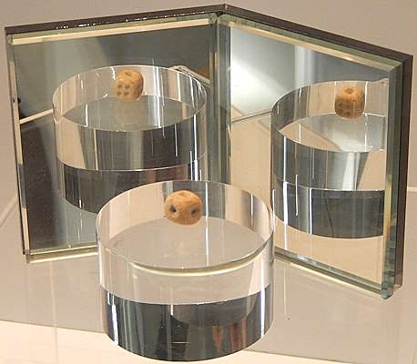
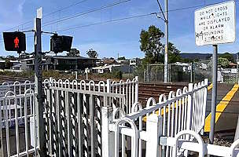

| Occlupanology |
| Fire Hydrants (Hong Kong and Macao) |
I am Kurisu (I'm not Japanese btw), a random person without a life. School and work be damned, niche interests first!
Link to my resources for topics I'm interested in:
 |
| Song Wong Toi station's pottery dice |
 |
| [YouTube video] Pedestrian level crossing at Albion Park station, NSW, Australia |